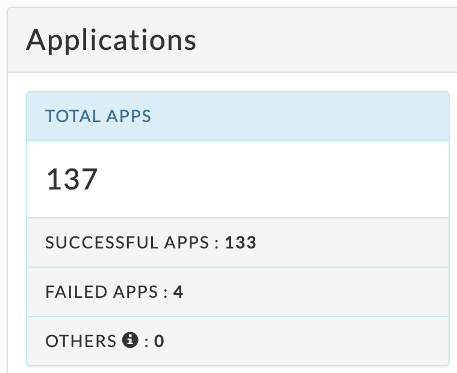
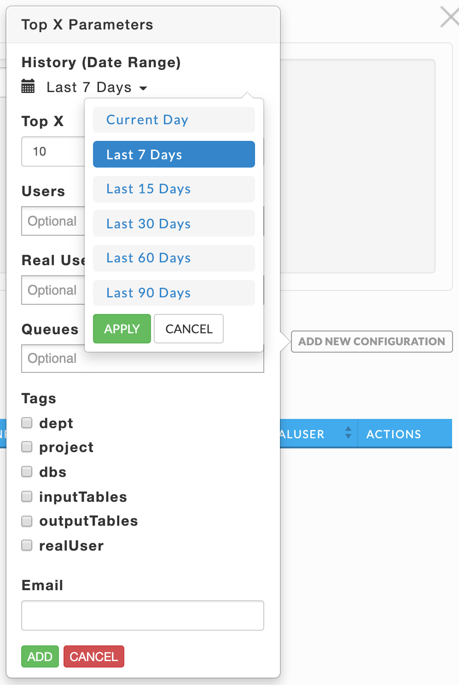
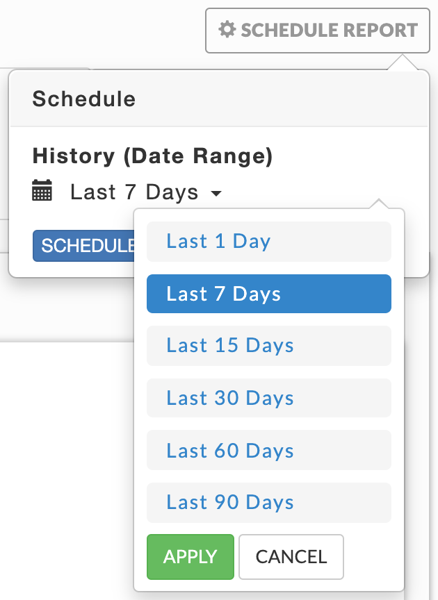

Operational insights

Chargeback YARN - chargeback reports YARN jobs.
Chargeback Impala - chargeback reports for Impala jobs.
Cluster summary - summary reports for cluster usage.
Cluster compare - compares cluster activity between two time periods on the same cluster.
Cluster optimization - analyzes the cluster performance and provides fine-tuning insights/recommendations.
Queue analysis - analyzes queue activity by apps, vCores and memory.
Cluster workload - shows the aggregated workload for all clusters.
Top X - the top X applications by various metrics, for example the longest duration and most memory.
Cluster KPIS - lists the basic KPIs for the cluster, including node health, apps and events over the time period.
When you can specify a date range or cluster, the pull down menu for it is on the right-hand side of the Operational Insights title bar. By default, it opens showing Chargeback tab grouped by Application Type for all clusters over the last 24 hours.
Note
Click here for common features used throughout Unravel's UI.
Chargeback YARN/Impala
The Chargeback YARN and Impala tabs are identical except the reports are limited to YARN and Impala jobs respectively.
You can generate chargeback reports for multi-tenant cluster usage costs sort by the Group By options: Application Type, Real User, User, Queue, and Other (tags, tables, and realuser). The default filter is Application Type.
The tab is divided into three sections:
Donut graphs showing the top results for the Group By selection.
Chargeback report showing costs, filtered and sorted by the Group By choice.
List of all YARN or Impala applications.
Generate chargeback report
You can set the date range and the cluster to use for the report in the Operational Insights title bar. Use the Group By to filter the information based on your selection. You must select one Group By and may select up to two. Each time you select an Other option it is added to the Group By options. If two Group By options are selected, the sort priority is noted. Click an option to deselect it. In this example the report is filtered and then sorted first Application than on the tag project. Note, that while you Group By tags, you can not by tag values. For instance, given <project, projname> you can Group By on <project> but not <projname>.
Clicking a Group By selection toggles it and changes the sort priority. If you only have one group value selected you can not deselect it until you add another one, i.e., there must always be one Group By choice selected. Using this example, if you deselect Application, the tag project becomes the first priority and you cannot deselect it until you add a second choice. To specify the vCore/Hour and Memory MB/Hour costs fractionally enter them directly into the text box. Hovering over the chart brings up a tooltip for that selection. Click Update Report to generate the report.
A new chargeback report is generated each time you change the Group By filters. However, if you change the base costs, you must click Update Report to apply them. This is a Chargeback YARN report. Click Download CSV above the table to down it as CSV file.

Cluster summary
The Cluster Summary can be grouped by Applications, User or Queue. You can choose the date range and cluster in the title bar. By default, Cluster Summary opens displaying the User information. If you group by Applications, you must then choose to Sort by vCore Seconds or Memory Seconds. To download the displayed report, click Download Report As and chose either JSON or CSV format. Note, the current visible report is downloaded. For User or Queue this is the complete report, but for Applications it is what the sort is on.
Applications
You can sort applications on vCore or Memory seconds.

User

Queue

Cluster compare
This tab opens displaying the cluster group by User with the Time Range and Compare with Range both set to the Last 7 Days, i.e., no comparison is displayed.
Use Group By to generate the report by User or Queue. Use the Time Range and Compare With Range pull-down menus to specify the time ranges.
Any deviation in metrics across the time ranges is highlighted (3). A green highlight with an upward arrow indicates an increase in usage, while red with a down arrow denotes a decrease. If the Time or Compare With range is invalid for the Group By choice the row for that time range is dashed (2).

Cluster optimization
Note
The OnDemand package must be installed to use this report.
This report analyzes your cluster workload over a specified period. It provides insights and configuration recommendations to optimize throughput, resources, and performance. Currently, this feature only supports Hive on MapReduce.
You can use these reports to:
Fine tune your cluster to maximize its performance and minimize your costs.
Compare your cluster's performance between two time periods.
Reports are generated on an ad hoc or scheduled basis. All reports are archived and can be accessed via the Reports Archive tab. The tab opens displaying the last report, if any, generated.
Download or generate a report
Click Download JSON to download the displayed report in JSON. To download a prior report go to Reports Archive.
 |
Click Generate New Report, the default is one day. To change the date click on it for the date picker to select a new Date Range. Click Run. Running replaces Run and a countdown is displayed until Unravel starts collecting the data. Generate New Report pulsates blue until the report is completed. When the report is successfully generated, a light green bar is displayed.

Click Schedule instead of run to schedule the report at some future date and time. You can schedule your report to run once or regularly. All reports (successful or failed attempts) are in the Reports Archive.
Optimization report
The Report has three sections.
Header Contains the basic report information author, time run, and dates used to generate the report.

KPIs
Number of Jobs: Per day average
Number of vCore Hours: Per day average
Number of MapReduce Containers
% containers for Map
% containers for Reduce
Amount of memory (in MB) from of MapReduce containers
% containers from Map containers
% containers from Reduce containers
The KPIs are a per-day average for the number of days in the report. In this case we generated a report for a two day period. All the insights/recommendations are based upon the analysis of all jobs, in this case 113.

Insights/Recommendations
This section contains a tab for each app type with the relevant properties under consideration for tuning. These are cluster wide properties, and they are the defaults for all apps. However, you can override these properties on an app by app basis.
MapReduce:
mapreduce.map.memory.mb
mapreduce.reduce.memory.mb
mapreduce.input.fileinputformat.split.maxsize
mapreduce.job.reduce.slowstart.completedmaps
Hive:
hive.exec.reducers.bytes.per.reducer
hive.exec.parallel
You can expand the insight tile to the full width of the window. Further, below we go into greater detail for two of the insights.

Insight/Recommendations tile details
Tune the size of the map containers
Each tile is entitled with the property being tuned. This image is the expanded view of the first tile.

Immediately beneath the title is the property name, in this case mapreduce.map.memory.mb. Click on the
 to bring up related properties.
to bring up related properties.
Next (1) is the tuning suggestion (1460), the projected impact (High) and the effect on the current jobs. In this case the recommendation effects 51% of the total jobs. The final section has the analysis information. The default (2) is the current property value (8192) and the percent of the apps that are currently using that value (51%). Click on the
to see the frequency map showing the job distribution by memory usage.As expected 51% of the jobs (58) used the default, while 33% (37) used 512 MB with the remaining jobs distributed across the remaining values.

The graph shows Unravel's analysis of the property potential values. It shows each candidate (proposed value) and the effect it had on the % of memory saved for the input workload and the % of jobs from the workload that would still run with the candidate. In this case we want to maximize the ability to run jobs while minimizing the memory allocation.
When there are tuning instructions it is noted above the graph (3). Click on
 to display the instructions explaining where and how to set the property and any additional information you should take into consideration. You'll notice that all the "related" properties and their relationship to what we're tuning are discussed here.
to display the instructions explaining where and how to set the property and any additional information you should take into consideration. You'll notice that all the "related" properties and their relationship to what we're tuning are discussed here.
Tune the number of the map containers

Tune the number of reduce containers in Hive queries
This analysis a tuning suggestion, instructions and additional information. Click Additional Info to see its contents.

In this case, the information was simply informative. There can be cases where tuning suggestions for specific apps are offered.

Queue analysis
Note
The OnDemand package must be installed to use this report.
You can generate a report of active queues for all your clusters or just one. The report analyzes queue activity by apps, vCores, memory, and disk. As with all reports, it can be generated on an ad hoc or scheduled basis. The tab opens displaying the last report, if any, generated. Reports are archived and can be accessed via the Reports Archive tab.
Click New Report to create new report. Enter the History (Date Range), the default range is one week. Use the Cluster pull down menu to select from your available clusters. Click Run. Running replaces Run and a countdown is displayed until Unravel starts collecting the data. A green banner bar is briefly displayed noting that "Queue Analysis Started" and New Report pulsates blue while the report is being generated. If Unravel is unable to start the report or failed to produce a report, a red banner bar is displayed noting report wasn't started along with any error messages. The time to generate a report varies based upon the time range selected and number of active queues on the cluster.
Click Schedule to run the report at some future date and time. You can schedule your report to run once or on a regular basis. All (successful or failed attempts) are stored in the Reports Archive.
 |
If the report was successfully generated a light green bar appears and a table listing all the queues existing during the time range is displayed. The table lists each queue with its KPIs average (Apps Running, vCores Allocated, and Memory Allocated). You can sort the queues on any column; by default the queues are sorted by name in ascending order. Sorting the list by average KPIs lets you identify the most or least active queue and focus on them instead of scrolling though the complete list of queues. Click in the Filter By box for the queue list and to select the queues to filter on. Click  in a queue's row to download the report.
in a queue's row to download the report.

Click in a queue's row to see its Applications, vCore Usage, and Memory Usage graphed. When monitoring a MapR Cluster a fourth graph, Disk Usage, is displayed. Click the selection box to chose from the available metrics to graph. You can select up to two metrics for each graph. Clicking within a graph opens a cluster view Operations > Usage Details > Infrastructure for that point in time. Hovering over a point in graph brings up a pop-up in all graphs displaying metrics and values along with the averages for the metric for that point in time.

Click  to expand the graphs to window width. The relationship between the graphs still exist, hovering over a graph bring ups the data for that point in time for all the graphs. The expanded graph has its metric legend beneath it. Hover over a metric to see its full definition and the current impact of the metric on the cluster. In this example the app's graph is expanded. Click to return the graph to its original size.
to expand the graphs to window width. The relationship between the graphs still exist, hovering over a graph bring ups the data for that point in time for all the graphs. The expanded graph has its metric legend beneath it. Hover over a metric to see its full definition and the current impact of the metric on the cluster. In this example the app's graph is expanded. Click to return the graph to its original size.

Cluster workload
Displays your cluster's YARN apps' workload across a date range using the following views:
Month - by date, for example, October 10.
Hour - by hour regardless of date, for example, 10.00 - 11.00.
Day - by weekday regardless of date, for example, Tuesday.
Hour/Day - by hour for a given weekday, for example, 10.00 -11.00 on Tuesday.
You can filter each view by App Count, vCores Hour, and Memory Hour.
Note
To measure the vCores or Memory Hour usage is straightforward; at any given point the Memory or vCore is being used or not.
The App Count isn't a count of unique app instances because apps can span boundaries, i.e., begin and end in different hours/days.
The App Count reflects the apps that were running within that interval up to and including the boundary, i.e., date, hour, day. Therefore, an app can be counted multiple times in time slice.
On multiple dates, for example, October 11 and 12.
In multiple hours, for example, 10 PM, 11 PM & 12 AM.
On multiple days, Thursday & Friday.
In multiple hour/day slots.
This results in anomalies where the Sum(24 hours in Hour/Day App Count) > Sum(App Counts for dates representing the day). For instance, in the below example:
App Count for Wednesdays (October 10, 17, and 24) = 2492, and
App Count across Hour/Day intervals for Wednesday = 2526.
We point this out not because it necessarily has a significant impact in how you can use the data, but to inform you such variations exist.
The tab opens in the Month view filtered on App Count for the past 24 hours. Use the Date Range date picker to change the range. We suggest using a short range as the longer the range the more processing time consumed. Click App Count, vCores Hour, and Memory Hour to change the display metric. The metric you select is used for all subsequent views until changed. Click View By to change between views. Immediately above the graph it textually notes the metric being used for the time range. When the date range is greater than one day the Hour, Day, and Hour/Day views allow you to display the data by either as an Average or Sum.
See Drilling Down below for information on how to retrieve the detailed information within each view.
Month view
Displays the jobs run on the particular date. The color indicates how the day's load compares with the other days within the date range. The day with the least jobs/hours is  , while the days with the highest load are
, while the days with the highest load are  . Therefore, the color of any particular day varies in context to the other days being displayed, e.g., when only one day is displayed it is colored . Use Previous and Next in the month's title bar to navigate between months.
. Therefore, the color of any particular day varies in context to the other days being displayed, e.g., when only one day is displayed it is colored . Use Previous and Next in the month's title bar to navigate between months.

Hour, day and hour/day view
These graphs don't link jobs to any specific date at the graph level. For instance, the Hour graph shows that 856 jobs ran at 2 AM (between 2 AM and 3 AM); the Day graph that 2,492 jobs ran on Wednesday, and the Hour/Day that 68 jobs ran at 2 am on a Wednesday. But none of these graphs directly indicate the date these jobs ran on. Only the Month view visually links job counts to a specific date; above we see October 10 had an app count of 822.
Each view opens using the metric selected for the prior view. For instance, if vCores Hour is used to display Month and you switch to Day it is filtered using vCores Hour.
When the DATE RANGE spans multiple days, you have the choice to display the data as either the:
Sum - aggregated sum of job count, vCore or memory hour during the time range (default view).
Average - Sum / (# of Days in Date Range).
Hour view
Breaks out information by hour. The interval label indicates the start, i.e., 2 AM is 2 AM - 3 AM. Hover over an interval for its details. Click the interval to drill down into it.

Day view
Displays the jobs run on a specific weekday. Hover over an interval for its details. Click the interval to drill down into it.

Hour/Day view
This view shows the intersection of Hour and Day graphs. The Hour graph showed 856 jobs ran between at 2 AM - 3 AM while the Day graph (immediately above) that 2,492 jobs ran on Wednesday. Below we see that 68 of Wednesday's jobs (2.7%) were running between 2 AM - 3 AM.

Drilling down in a workload view
Click an interval to bring up its information. In our example, we selected October 11 in the Month view which was filtered on App Count (921 apps). A list breaking out the jobs by app type is displayed. Below we see all 921 were MR jobs.

Click to display User and Queue details. User is displayed by default; click Queue to see all the queues. In this case there are two users, HDFS (910 jobs) and ROOT (11 jobs). Click  (job details) to see the running apps for that row. When there are multiple choices shown, Unravel notes which detail is being displayed by highlighting the row. Below there are three options:
(job details) to see the running apps for that row. When there are multiple choices shown, Unravel notes which detail is being displayed by highlighting the row. Below there are three options:
App Type: MR
User: HDFS
User: ROOT
We selected the user ROOT so its row is highlighted. Immediately above table is noted what's being displayed. See Applications > Applications for more information on the table. Click an app to bring it up in its APM. When you change the metric (App Count, vCores Hour and Memory Hour) the window reverts to displaying the graph.

Top X
Note
The OnDemand package must be installed to use this report.
This tab generates two reports:
The top X Hive, Impala, and Spark apps for the following categories:
Longest Duration: Time to completion.
Highest Disk I/O: Summary of total dfs bytes read and written.
Highest Cluster Usage: Summary of map/reduce slot duration.
Highest CPU Usage: vCore seconds (Hive on Tez not supported)
Highest Memory Usage: Memory seconds (Hive on Tez not supported)
User Report: which is a Top X report mailed to specific Users. (Available in Unravel 4.5.3.0 and later.)
Click New Report to generate the Top X report by apps. Use the pull down menu to change the History (Date Range). (When you schedule a user report your choice of Date Range is constrained.) Enter the number of apps (Top X) to include in the report.
To filter by a subset of Users, Real Users, or Queues click in the text box below it for a list of values. To filter on Tags (when available), select the box next to the tag and then click in the selection box for the available values.
Click a value to select it; once selected to deselect it click the x next to it. You can select zero or more values.
 |
Click Run. Running replaces Run and a countdown is displayed until Unravel starts collecting the data. A dark green banner is briefly displayed noting that "Top X Started". New Report pulsates blue while the report is being generated. When Unravel is unable to start the report, a red banner containing an error message is displayed.
When the report is successfully completed, a light green bar appears noting "Top X Completed Successfully". The report displays up to the top X apps per app type. The number of apps displayed can vary by app type. You can download the report by clicking the Download JSON button. The downloaded report is unfiltered and contains the information for Hive, Impala, and Spark.
If Unravel was unable to generate the report, an error message in a light red bar is displayed and New Report becomes orange.
Click the Filter By option to switch between the app types. The first tile is Top X Report: Input Parameters. The number of apps (Top X) and Date Range are always listed since they are required. Any optional parameters selected are also listed. On the right-hand side is the Report Id which the report is archived under.

The report itself is composed of three tiles. (Note: the information can vary by app type).
The Applications tile lists by app type:
Total Apps: Number of apps on the cluster.
Successful Apps: Number of apps that have successfully completed.
Failed Apps: Number of apps that have failed to complete.
Others: Number of apps that were killed, or those that are in a pending, running, waiting, or unknown state.
|  |
Immediately beneath the Application Summary are five tables showing the top X apps for each category. Specific apps can be listed in multiple tables. If there are less than X apps, each table contains all the apps sorted on the metric. Regardless of app type, the table has the following columns:
Status: The status of the app: success, failed, killed, or running.
User: The app's owner.
Real User: The User who actually submitted the job, for example, jdoe@company.com. The real user may be different from User.
ID: The app's ID, hover over it for the full id.
CPU: The app's CPU usage over the lifetime of the app.
Memory: The app's memory usage.
# Events: The total events the app had.
Tags: Tags associated with the app. If you are filtering based upon tags only apps with matching tags are displayed. All the tags for the app are displayed.
App Parent: App's parent.
Each app type also has app specific columns, specifically
Hive: Query Snippet and App Parent (links to the app's parent when applicable).
Impala: Query Snippet.
Spark: # Spark Stages and # Spark Tasks.
No Data Found is listed when there is no information for the available for the app type.
These tables vary by app type, but within the app type they are the same. Each table displays the top X apps for the metric.
Examples:
Hive
Impala

Spark
These tables are similar to those above except the DURATION column is replaced by the metric.
Examples:
Hive


Impala

Spark

This tile varies by app type, but always has up to top ten Queues sorted by App Count.
Examples:
Hive
 |
Impala
 |
Spark
 |
Lists the Total Read I/O and Total Write I/O across all apps for the app type.
 |
This report is designed for a variety of end users, for instance:
App developers who can use it to determine what apps need attention to improve duration, resource usage, etc.
Team leaders or managers who can use it to track how the team uses resources and identify user's who overuse resources (rogue users).
It provides a concise and clear view of:
How apps are performing on the platform.
The resources the apps are using.
The number of recommendations or insights Unravel has for the app.
This report is like the Top X report above except the columns are ordered differently.
Click Schedule User Report to bring up the Report:User modal. You must enter a Schedule Name. The Scheduling information defaults to Daily and the current time. Change the schedule to the time you want the report to run and how often. At the bottom is a table listing the configurations you have added. The table lists all the available tags and you can see what has been selected for each user. You can add multiple configurations but must have at least one.
See Adding configurations manually for using Add New Configuration and Bulk Upload for adding multiple configurations via a CSV file. Once you have finished, click Save Schedule. Click  to close the modal; if you close it before saving all your input is lost.
to close the modal; if you close it before saving all your input is lost.

Click Add New Configuration, the modal is like the Top X one above except you have a limited History (Date Range) and an Email text box. You can use the default settings, but you must enter an email. Multiple configurations do not have to match, but each configuration must have a unique email. If you want to send multiple reports to the same User you must create a new User report for the configuration. As with all reports, when you do not select an option, the report is left unfiltered on that option. For example, if you don't select a subset of Users, a report is generated for the top X across all users. In the example above, the two configurations only have the Date Range and Top X number in common. Once a configuration is entered, click  to edit it and
to edit it and  to delete it.
to delete it.
|  |
Import Data from CSV lets you upload a CSV file containing configurations for multiple users. Unlike when you manually enter configuration, you cannot specify a Date Range as Unravel automatically sets it to seven days.
Unravel parses the complete file, rejecting any malformed entries, or those containing a duplicate email.
The new report modal lists the possible columns, these can vary based by cluster. Here we have two user defined tags, dept and project. For each column you need to know the possible values. (When you enter the configuration manually Unravel provides you with all possibilities.)

In this example, there are eleven possible columns as the Date Range and Action columns are irrelevant. You do not have to include (define) all the column headers or order them the same. However, whatever columns/tags you include must be defined for all entries in the order you chose. You must define an email column.
Any column/tag which is not added to the CSV, or left undefined for a configuration is unfiltered. For instance, if Users is undefined, the report is generated across all users.
CSV Format:
Col header1,Col header2,Col header3, ... // up to the number of possible options entry1, entry2, entry3, ... // up to the number of columns defined
In the following example, the CSV file only defines five columns Email (required), Top X, Users, RealUsers, and Dept. Therefore, the reports are not filtered by Queue, Project, DBS, Inputtables or Outputtables.
topx,email,Users,realUsers,dept 6,a@unraveldata.com,hdfs,hdfs,eng // all columns are defined, entry is accepted 10,b@unraveldata.com,root,,eng // realUsers is defined as empty, entry is accepted 7,b@unraveldata.com,root,,eng // duplicate email, the entry is rejected 7,z@unraveldata.com,,,test,root,fin // 2 extra columns were added, the entry is rejected 7,y@unraveldata.com,root,,eng // realUsers is defined as empty, entry is accepted
The UI lists the results of the CSV import. In this case only lines 1, 2, and 5 were loaded. See above for the explanation. Once you have loaded the configuration you can click to edit it a configuration manually or to delete it.


Cluster KPIS
Note
The OnDemand package must be installed to use this report.
This report lets you quickly see the overall health of your cluster. You can also schedule it to be emailed to users on a regular basis. The report has eight tiles.
Overall Health of Platform
Resources
Nodes
Usage (HDFS) across the cluster
YARN Consumers
Impala Consumers
By default, this page displays the data for the past hour. You can change the time range by clicking Schedule Report, then click History (Date Range) and select the available time period. Click Apply. The report is updated for the time period selected. If you wish to schedule a report, select your date range and then click Schedule. Once the report is generated it is sent to all listed recipients. See Scheduling for an explanation
|  |
Overall health of the cluster
KPIs across the entire cluster.

Resources
Graphs the available and allocated vCores and memory for the entire cluster.

Nodes
Graphs the total number of nodes and the breakdown by node status, active, lost, unhealthy, decommissioned and rebooted.
| Total = Active + Unhealthy |
Where:
| Active: currently running and healthy nodes. |
| Unhealthy: currently running and unhealthy nodes. |
Usage (HDFS) across the cluster (forecasting report)
This is the last Reports > Data Insights > Forecasting report, for HDFS disk capacity.

YARN and Impala consumers
These tables show the Databases and all the tags associated with the YARN or Impala jobs
The following examples have eight sections.
By DBS: Databases the YARN or Impala apps use.
By Dept: Tag key.
By Inputtables: Input tables.
By Outputtables: Output tables.
By Project: Tag key.
By Realuser: User who submits the app.
By unravel.app.name: App name.
By User: User who runs the app.
Each section of the table lists all its members. For instance, DBS contains a row for each database while Project contains all the values for the tag.
When no data is found only the By User tables are shown for YARN and Impala since the user is the basis of the YARN and Impala tables.
YARN consumers
Table columns
Section Name: Each row lists a section member, for example, DBS will list all the databases.
App Count: Number of apps which accessed the section member.
CPU Hours: Aggregated CPU hours across all the apps accessing the section member.
% Total CPU Hours: Percentage of the (Total CPU Hours)/(Aggregated CPU Hours across all apps).
Memory Hours: Aggregated member hours time across all the apps accessing the section member.
% Memory Hours: Percentage of the (Total Memory Hours)/(Aggregated Memory Hours across all apps).

Impala consumers
Table Columns
Section Name: Each row lists a section member, for example, DBS has a row for each database.
App Count: Number of apps which accessed the section member.
Total Processing Time Hours: Aggregated processing hours across all the apps accessing the section member.
% Total Processing Hours: Percentage of the (Total Processing Time Hours)/(Aggregated Processing Time Hours across all apps).
Memory Hours: Aggregated member hours time across all the apps accessing the section member.
% Memory Hours: Percentage of the (Total Memory Hours)/(Aggregated Memory Hours across all apps).